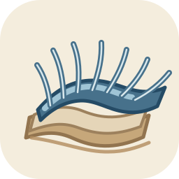

CONTINUA PER ON ERES
Els fonaments
Lliçó 1 · Com funciona el sistema de campanar

ESTONAAprèn a dir les hores en catalàDescobreix la manera tradicional catalana de dir les hores, pas a pas.
Lliçó 1 · Com funciona el sistema de campanar
Vuit mons per entendre, construir i fer teves les expressions horàries catalanes.
Tria què vols entrenar. Sense presses, amb pistes i explicacions quan les necessitis.
Propostes per consolidar el que aprens i descobrir què ja domines.
Reconeix i construeix cinc expressions de les hores en punt i dels quarts.
Completa les primeres lliçons per començar a omplir el teu camí.
El progrés es desa en aquest dispositiu. Pots exportar-ne una còpia o restaurar-ne una d'anterior.
Si esborres les dades de Safari o reinstal·les l'aplicació, pots perdre el progrés si no en tens una còpia.
Continguts lingüístics en preparació i revisió. Les activitats encara no formen part d'una versió educativa validada.
Aquesta és una primera estructura de contingut. Les expressions i explicacions definitives s'incorporaran després de la revisió lingüística.
Un espai de consulta per entendre els termes i les expressions del sistema horari català.
Les definicions i les fonts s'afegiran quan hagin estat contrastades amb les obres lingüístiques de referència.
Exercici de mostra, pendent de validació